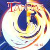

Celtic Lyrics Corner > Artists & Groups > Tannas > Rù-Rà > Nach Fhreagair Thu, Cairistiona
|  | Nach Fhreagair Thu, Cairistiona |
| Credits : | Traditional; arranged by Tannas |
| Appears On : | Rù-Rà |
| Language : | Gàidhlig (Scottish Gaelic) |
| Other Versions : |
"
Cairistiona
" on George Jackson & Maggie MacInnes' album Cairistiona
" Cairistiona " on Maggie MacInnes' album Peaceful Ground |
| Lyrics : | English Translation : |
| Nach freagair thu Chairistiona | Will you answer Christina? |
| Sèist : | Chorus (after each verse) : |
| E hó hí ura bhí | E hó hí ura bhí |
| Ho ro ho i o ho ro ho | Ho ro ho i o ho ro ho |
| E hó hí ura bhí | E hó hí ura bhí |
| Nam freagradh gun chluinninn fhìn thu | If you were to answer, I'd surely hear you |
| Bha mi 'm bliadhna an Cùirt an Rìgh leat | I went to the king's court with you this year |
| 'S ged chanainn e, bha mi an trì ann | I've been there this last three with you |
| Tighinn a dh 'iarraidh Chairistiona | Coming to fetch Caristiona |
| Chan ann gu pòsadh Mhic Rìgh leat | But not for a prince's wedding, alas |
| Gus do chuir 'san talamh ìseal | But to place you in a deep grave |